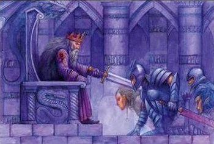
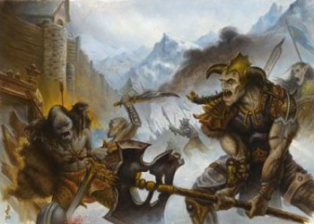

Alignements
TEST D'ALIGNEMENT
Pas encore convaincu de l'alignement de votre personnage suite à la lecture de cette page ? Faites le test d'alignement que propose le site.
L'alignement est un des « concepts » de D&D qui fait le plus parler, car il n'est pas si évident à comprendre et prête souvent à confusion. Cette page a donc pour objectif de vous aider à déterminer l'alignement d'un personnage en clarifiant les bases.
L'alignement est la combinaison de deux facteurs : l'un définit la morale et l'autre décrit l'attitude envers la société et l'ordre. L'alignement d'un personnage dépend donc de sa position sur ces deux axes. Les neuf combinaisons possibles correspondent aux neuf alignements.
La morale (Bon, Neutre ou Mauvais)
Cet axe est sûrement le plus facile à définir. Il fait appel à nos références du bien et du mal. Un personnage bon est honnête, généreux, miséricordieux et constructeur. La vie d'autrui ne s'ôte pas pour de futiles raisons. Par contre le sacrifice de sa propre personne pour le bien de tous n'est pas une chose qui doit faire peur. Détruire, que ce soit une vie ou un lieu, est un acte négatif qui devra toujours être bien pensé afin d'être sûr qu'il soit nécessaire d'être entreprit (destruction d'une créature ou d'un lieu mauvais par exemple).
Par opposition, quelqu'un de mauvais sera malhonnête, égoïste, cruel et destructeur. La vie des autres a peu d'importance à ses yeux. Une chose meurt, une autre naîtra, peu importe. Se sacrifier personnellement pour une cause est par contre un acte inexplicable.
Un personnage neutre se situe entre les deux. Mais cela peut être un neutre passif (qui laisse faire sans jamais prendre parti d'un côté ou de l'autre) ou bien un neutre actif, qui lui au contraire lutte fortement afin qu'aucune des deux parties ne prenne le dessus sur l'autre, l'équilibre dans toutes choses étant à ses yeux primordial.
L'ordre (Loyal, Neutre ou Chaotique)
Cette notion est surement la plus compliquée et la plus confuse. Il faut en effet non pas prendre Loyal comme respect de la loi, mais plutôt comme respect de l'ordre, de l'autorité et de la hiérarchie, qu'elles soient légales ou non.
Un personnage loyal est discipliné, raisonné, possède l'esprit de groupe et est traditionaliste. C'est typiquement l'état d'esprit des nains. Mais ce respect de l'ordre et de la hiérarchie ne doit pas être lié à un quelconque ordre moral ou légal. Les membres d'une guilde d'assassins, par exemple, seront vraisemblablement loyaux, bien qu'en complète illégalité, du seul fait que pour qu'un ordre occulte de ce type fonctionne il doit faire appel à une énorme discipline de la part de chacun de ses membres. Un tyran mauvais sera également enclin à être loyal, car il a besoin que chacun de ses subordonnés fassent respecter l'ordre et SA loi.
Par opposition, quelqu'un de chaotique sera rebelle, intuitif, informel, individualiste et progressiste dans sa manière de voir les choses. C'est typiquement l'état d'esprit des elfes. Là aussi, cela n'est lié d'aucune sorte à la morale ou à la légalité. Pour les elfes, chaotiques mais bons, cela signifie simplement, et avant tout, la liberté. L'absence de codes formels et écrits, mais compensée par une bonté naturelle et une morale, fait que l'ensemble ne dérive pas vers un monde de brutes et de non-respect des autres. Pour une tribu d'orcs par contre, également chaotiques mais mauvais, cela débouche bel et bien sur un réel chaos où chacun fait ce qu'il veut, car aucune barrière morale ne sert de limite.
Un personnage neutre se situe entre les deux, acceptant qu'un minimum d'ordre soit nécessaire dans une civilisation, mais prenant bien garde à ce que cela ne dérape pas en une forme de contrôle de la pensée, voire d'esclavagisme.